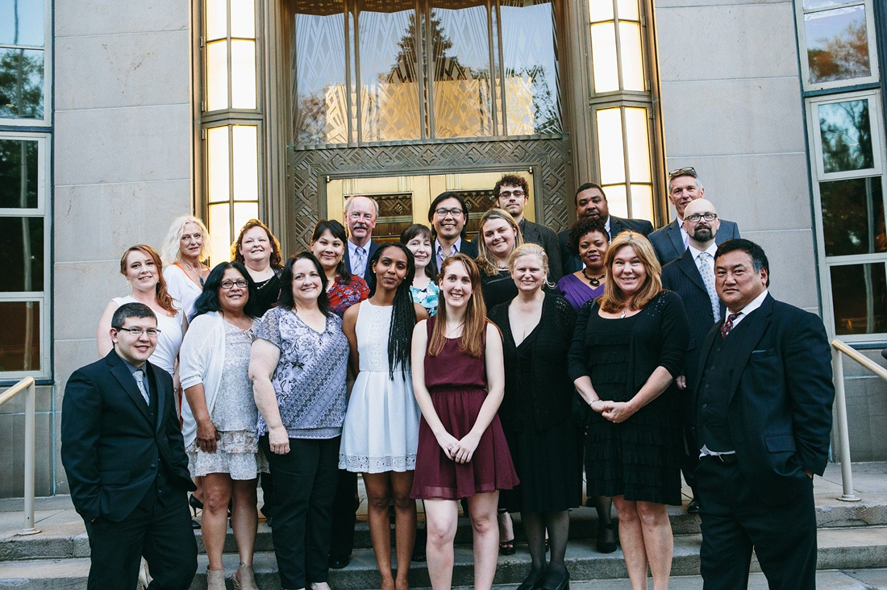
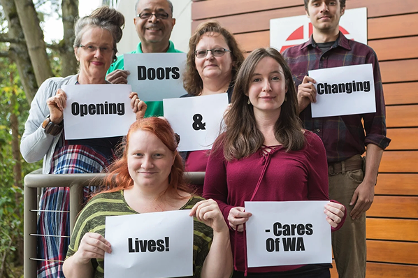

Who we are
We are a CARF accredited non-profit focused on serving people with disabilities and low-income for over 40 years. We provide thoughtful, personalized care to people with disabilities and low-income gain.


Our History
Care of Washington has been helping people for over 40 years. Starting as IAM CARES in 1980, in Seattle originally helping injured Boeing machinists get back to work.
Mission Statement
Support people with disabilities and low income realize their purpose, potential and strength.
Vision
An equitable, inclusive community committed to stability and fulfillment.
Employment & Community Inclusion Team
Advancement Team
Accounting and Admin Team
CEO
"At Cares of Washington, we envision a community where every individual has the opportunity to reach their fullest potential and engage fully in both life and work. As a people-centered organization, we are deeply committed to empowering individuals with disabilities and low incomes through personalized, efficient, and innovative support strategies.
Our dedicated team continuously invests in education and active engagement to ensure meaningful and positive outcomes for every person we serve. By championing inclusion, equality, and personal choice, we strive to create meaningful job opportunities for those facing significant employment barriers.
Supporting Cares means investing in a future where trust and individuals' strengths drive community growth. Together, we can build a more inclusive workforce and help people embrace life's challenges and opportunities with confidence. Your contribution makes this vision possible - partner with us to open doors and change lives to strengthen our community."